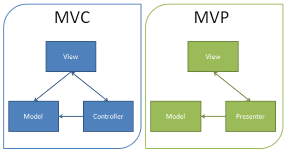

🏗️Arquitecturas y Patrones de Diseño
Organizan el código para facilitar pruebas, mantenimiento y escalabilidad.

-
MVC: separación básica en modelo, vista y controlador.
Por qué es ejemplo: Ideal para apps simples como listas de tareas.
-
MVP: View pasiva, Presenter con la lógica.
Por qué es ejemplo: Útil para formularios o validaciones claras.
-
MVVM: data-binding o flujos reactivos.
Por qué es ejemplo: Perfecto para apps que actualizan UI en tiempo real.
-
Clean Architecture: dominio, datos y presentación en capas.
Por qué es ejemplo: Escalable para aplicaciones grandes con muchos módulos.
-
Patrones de diseño: repository, factory, singleton.
Por qué es ejemplo: Hacen el código más mantenible y fácil de probar.